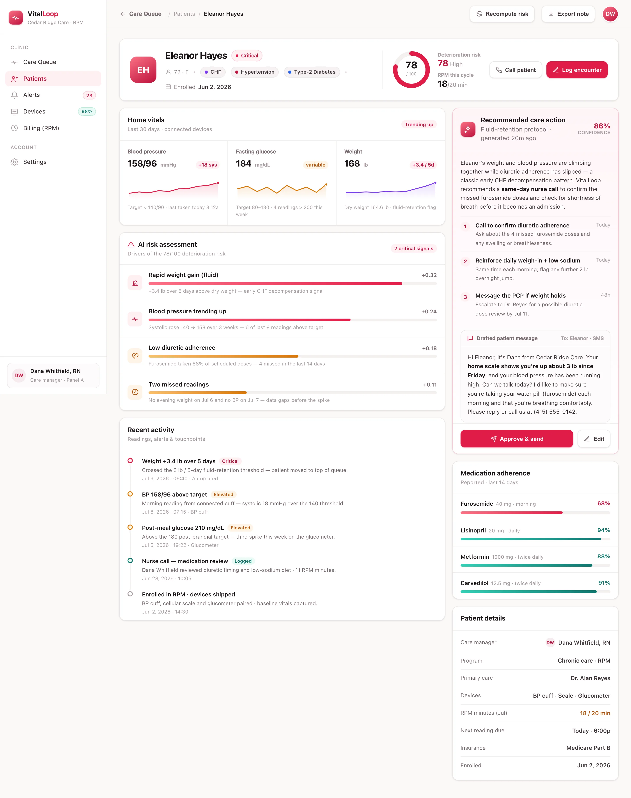

Capture at home
Connected BP cuffs, scales, glucometers and pulse-ox devices stream readings straight into the record — no app fiddling for the patient.
VitalLoop watches every home reading from your chronic-care patients, triages the ones trending the wrong way into a prioritized care queue, and drafts the outreach — while it tracks every billable RPM minute.
VitalLoop turns the stream of home devices into ranked alerts — every flag tied to the reading that triggered it, so a nurse knows exactly why a patient surfaced.
Systolic over 150 or diastolic over 95 on the connected cuff — the most common trigger in the panel.
Fasting reading above 200 mg/dL from the glucometer, weighted higher for insulin-dependent patients.
More than 3 lb in 48 hours on the cellular scale — the earliest tell of fluid retention.
No upload in 48 hours — a data gap that quietly hides the trend, so re-engagement outreach queues automatically.
Every risk score decomposes into the drivers that produced it — with weights, not a black-box number. Here's how one critical patient breaks down.
VitalLoop closes the loop from a reading taken at the kitchen table to the call a nurse should make today — and logs the billable minute on the way.
Connected BP cuffs, scales, glucometers and pulse-ox devices stream readings straight into the record — no app fiddling for the patient.
The model scores every trend, ranks abnormal readings into one worst-first care queue, and attributes each alert to the signal behind it.
VitalLoop drafts the patient message or call script for the nurse to approve — and logs every qualifying RPM minute toward the billing threshold.
BuildspaceLabs built the MVP front end: a population Care Queue for triage and a per-patient detail view for the nurse running the outreach.
Live readings, open alerts and billable RPM minutes sit above a risk-tiered patient table — so the patients trending the wrong way are always on top.

Thirty-day sparklines for blood pressure, glucose and weight, a weighted AI risk assessment, an alert timeline — capped by a drafted outreach message the nurse approves.

Ingestion, triage, outreach and billing consolidated into one care-team surface — nothing left in a spreadsheet.
Live readings, open alerts and RPM minutes above a worst-first, risk-tiered patient table.
Every abnormal trend scored and ranked, so the patients who need a nurse rise to the top.
Each score decomposes into weighted drivers: weight, blood pressure, adherence, missed readings.
Thirty-day sparklines for blood pressure, glucose, weight and SpO₂ on every patient file.
A warm, plain-language message or call script the nurse reviews and approves in one tap.
Every qualifying minute logged toward the 20-minute threshold, per patient, per cycle.
A score nobody understands gets ignored on a busy panel. VitalLoop shows the weighted readings behind every risk flag — so the recommendation carries its own justification, and a human stays in the loop.
Delivered as a production-quality MVP in a nine-week engagement.
We build AI-native products like VitalLoop. Tell us about your chronic-care panel and we'll show you what an explainable RPM triage system looks like on your patients' data.